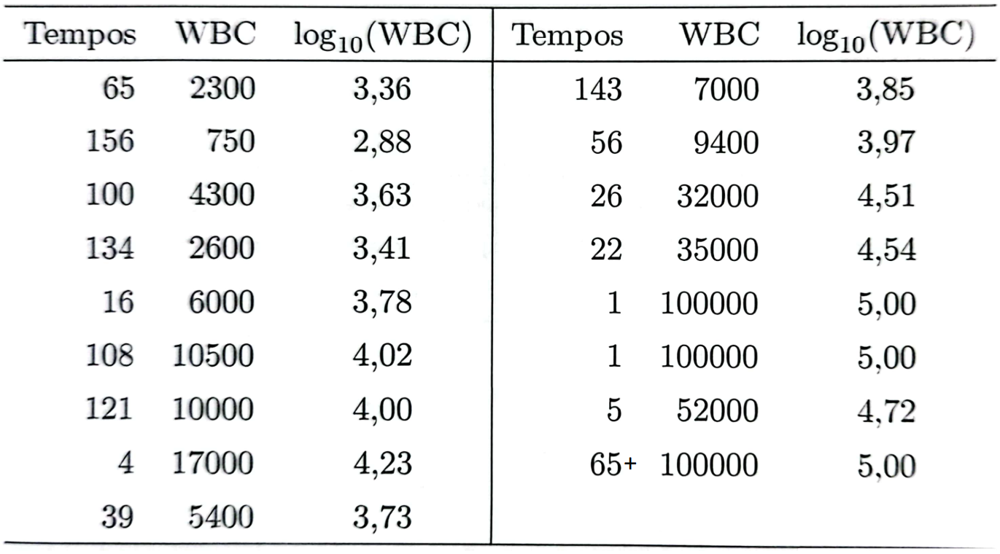
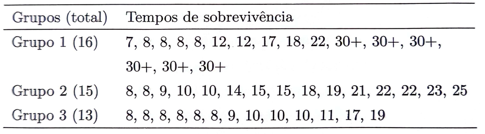
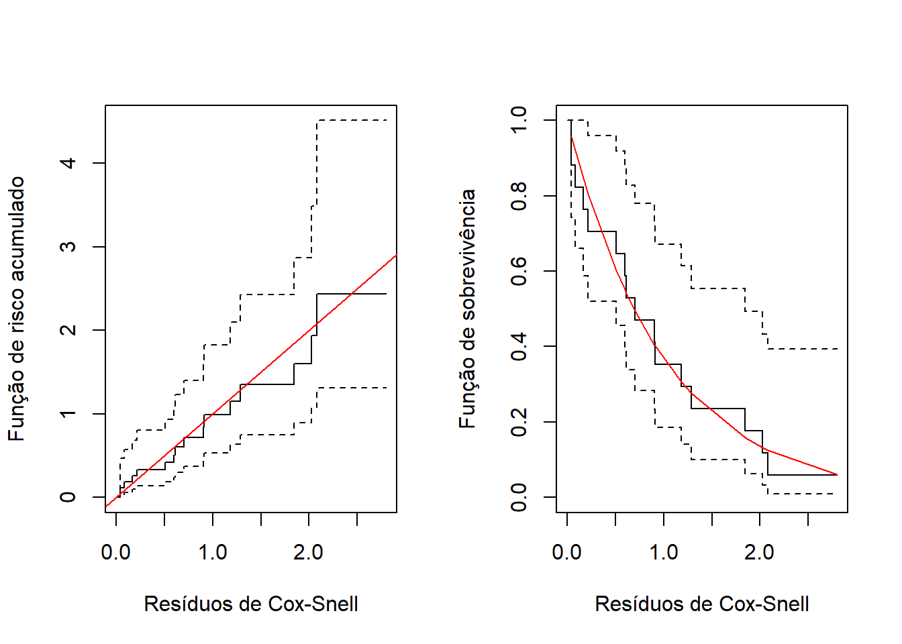
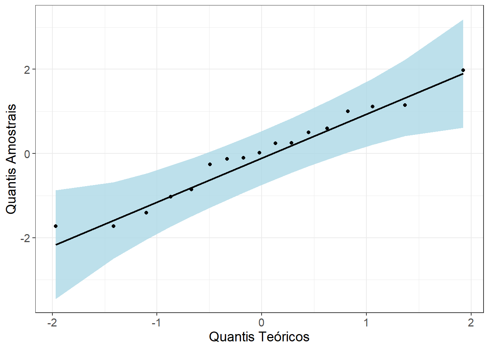
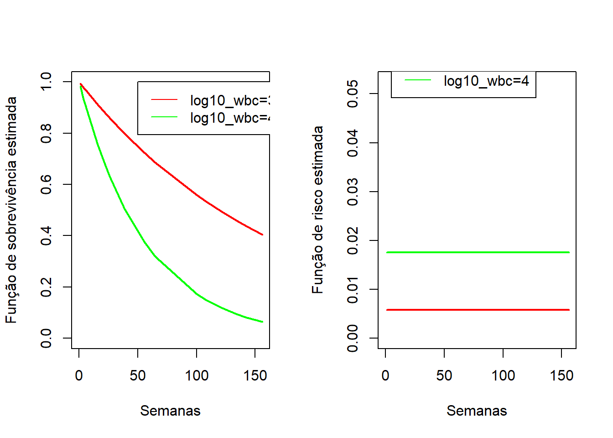
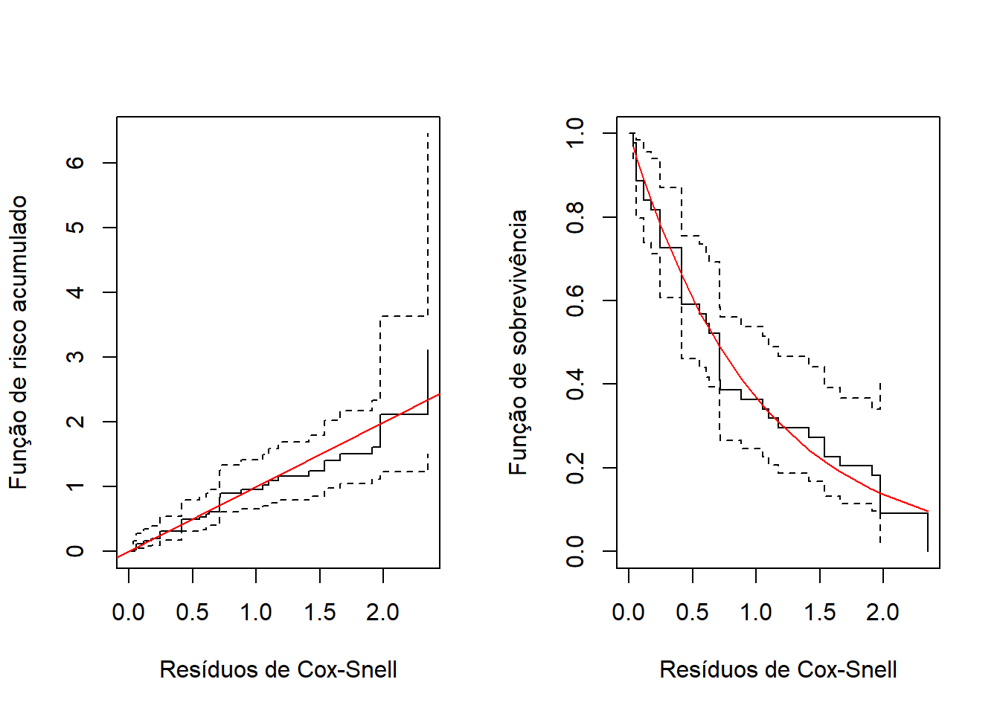
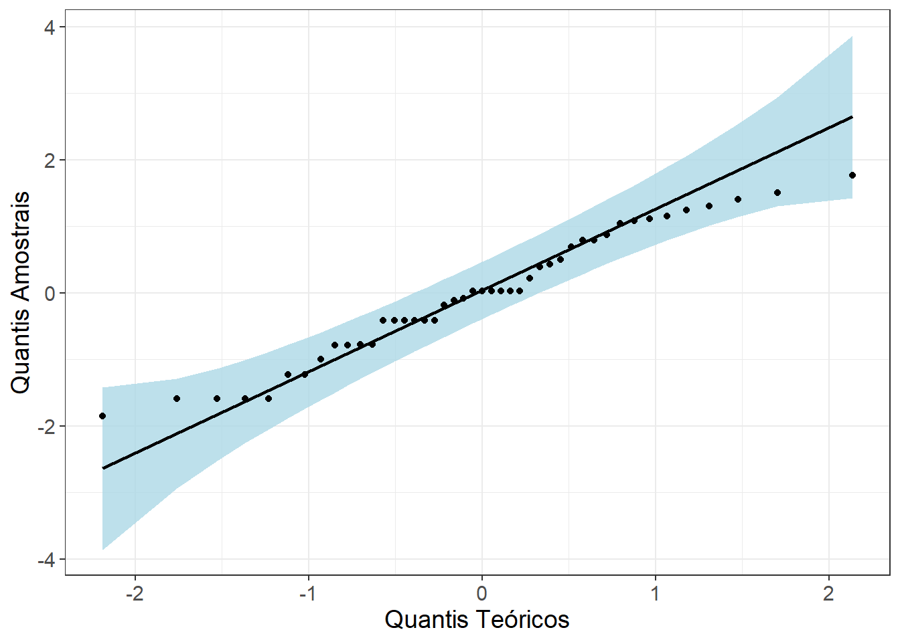
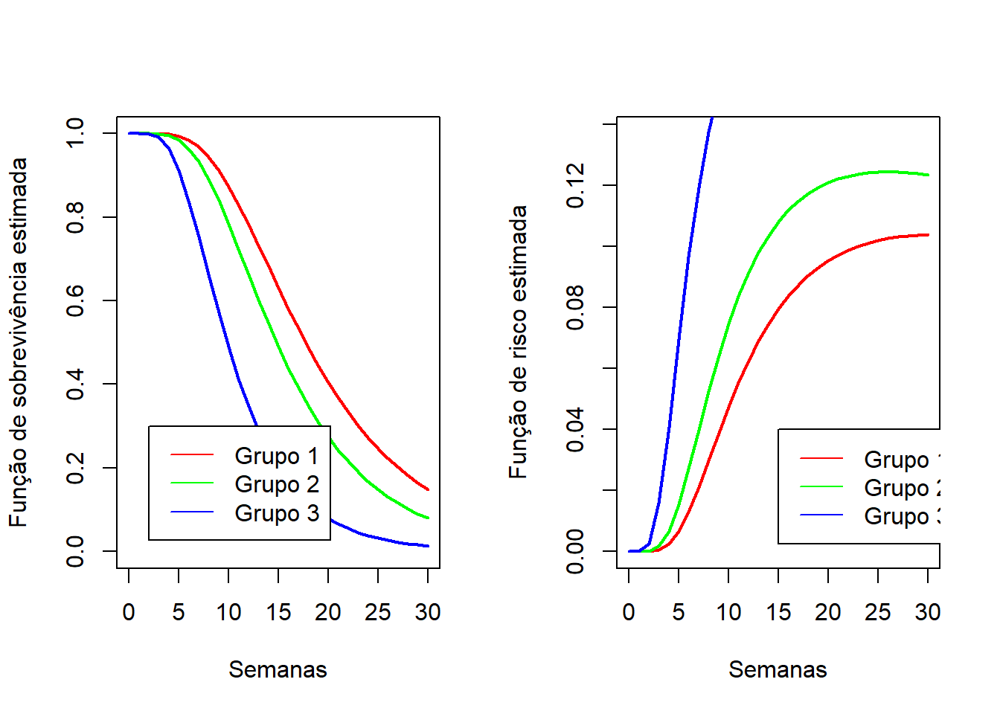

Código
require(flexsurv)
require(reslife)
require(dplyr)
require(ggplot2)
library(qqplotr)
library(coin)Para esta quarta aula prática de Análise de Sobrevivência e Confiabilidade, precisaremos dos seguintes pacotes:
require(flexsurv)
require(reslife)
require(dplyr)
require(ggplot2)
library(qqplotr)
library(coin)Pacote flexsurv: Responsável pelo ajuste de modelos paramétricos flexíveis aos dados de tempo até a ocorrência de um evento de interesse.
Pacote reslife: Responsável por fornecer uma estimativa para o tempo médio residual de ocorrência de um evento de interesse.
Pacote dplyr: Responsável por permitir as manipulações em bases de dados.
Pacote ggplot2: Responsável pela gramática dos gráficos do R.
Pacote qqplotr: Responsável por fazer o gráfico qqplot.
Pacote coin: Responsável por fazer o teste de Peto-Peto.
Esta seção é dedicada à descrição das bases de dados utilizadas nesta aula.
Considere os tempos de sobrevivência, em semanas, de 17 pacientes com leucemia aguda apresentados na Tabela abaixo. Para esses pacientes, suas contagens de glóbulos brancos (WBC) foram registradas na data do diagnóstico e estas, com seus correspondentes logaritmos, na base 10, encontram-se também na Tabela:

Um estudo experimental realizado com camundongos para verificar a eficácia da imunização pela malária foi conduzido no Centro de Pesquisas René Rachou, Fiocruz, MG. Nesse estudo, quarenta e quatro camundongos foram aleatoriamente divididos em três grupos e todos foram infectados pela malária (Plasmodium berguei).
Os camundongos do grupo 1 foram imunizados 30 dias antes da infecção. Além da infecção pela malária, os camundongos dos grupos 1 e 3 foram, também, infectados pela esquistossomose (Schistossoma mansoní). A resposta de interesse nesse estudo foi o tempo decorrido desde a infecção pela malária até a morte do camundongo. Este tempo foi medido em dias e o estudo foi acompanhado por 30 dias. Os tempos de sobrevivência observados para os três grupos encontram-se abaixo. 0 simbolo + indica censura.

O estudo é constituído de pacientes portadores de HIV atendidos entre 1986 e 2000 no Instituto de Pesquisa Clínica Evandro Chagas (Ipec/Fiocruz). Dessa coorte, obteve-se uma amostra de 156 indivíduos que foram diagnosticados como portadores de AIDS (critério CDC 1993) durante o período de acompanhamento. O objetivo é mensurar o tempo, em dias, do diagnóstico até a morte dos pacientes. Para comparação da sobrevivência, vamos ver como o tipo de tratamento impacta a sobrevivência: terapia antirretroviral: A = nenhum, B = mono, C = combinada, D = potente. A base está armazenada no objeto AIDS.csv
AJUSTE DOS MODELOS
tidy(ajuste), que retornará:
INTERPRETAÇÃO DOS COEFICIENTES
Est = exp(-ajuste$coefficient)
IC = exp(-confint(ajuste)) Note que o intervalo aparecerá ao contrário!!
Est = exp(ajuste$coefficient)
IC = exp(confint(ajuste)) ANÁLISE DE RESÍDUOS
Para a obtenção dos resíduos de Cox-Snell, utilizaremos a função coxsnell_flexsurvreg(ajuste), em que ajuste é um modelo flexsurv.
Para a obtenção dos resíduos quantílicos aleatorizados, utilizaremos os seguintes comandos:
survival = NULL
quantilic = NULL
cdf = NULL
Residuo = NULL
for(i in 1:nrow(dados1)){
survival[i] <- summary(
ajuste,
type = "survival",
newdata = dados[i, , drop = FALSE],
t = dados$temp[i]
)[[1]]$est
cdf[i] = 1-survival[i]
if(dados$cens[i] == 1){
quantilic[i] <- cdf[i]
} else {
quantilic[i] <- runif(1, min = cdf[i], max = 1)
}
Residuo[i] <- qnorm(quantilic[i])
}Para entendermos bem a saída dos modelos de regressão paramétricos e a interpretação dos coeficientes, esta seção é dedicada ao estudo desses modelos considerando somente uma covariável.
Vamos ilustrar esse cenário com a base de dados de leucemia aguda. Para isso, vamos carregar a base de dados:
temp<-c(65,156,100,134,16,108,121,4,39,143,56,26,22,1,1,5,65)
cens<-c(rep(1,16),0)
log10_wbc<-c(3.36,2.88,3.63,3.41,3.78,4.02,4.00,4.23,3.73,3.85,3.97,
4.51,4.54,5.00,5.00,4.72,5.00)
dados1<-data.frame(temp,cens,log10_wbc)Para esta base de dados, consideraremos a seguinte estrutura regressora: \[\beta_0+\beta_1x_i,\] em que \(x_i\) é o valor de log10_wbc para o \(i\)-ésimo paciente, com \(i=1,...,17\).
Para ajustar cada um dos 5 modelos de regressão paramétricos vistos na disciplina, considere os seguintes comandos:
ajuste_exp<-flexsurvreg(data=dados1, Surv(temp,cens)~log10_wbc,
dist="exponential")
ajuste_wei<-flexsurvreg(data=dados1, Surv(temp,cens)~log10_wbc,
dist="weibull")
ajuste_lognorm<-flexsurvreg(data=dados1, Surv(temp,cens)~log10_wbc,
dist="lognormal")
ajuste_gama<-flexsurvreg(data=dados1, Surv(temp,cens)~log10_wbc,
dist="gamma")
ajuste_gengama<-flexsurvreg(data=dados1, Surv(temp,cens)~log10_wbc,
dist="gengamma")
dados1 temp cens log10_wbc
1 65 1 3.36
2 156 1 2.88
3 100 1 3.63
4 134 1 3.41
5 16 1 3.78
6 108 1 4.02
7 121 1 4.00
8 4 1 4.23
9 39 1 3.73
10 143 1 3.85
11 56 1 3.97
12 26 1 4.51
13 22 1 4.54
14 1 1 5.00
15 1 1 5.00
16 5 1 4.72
17 65 0 5.00MODELO EXPONENCIAL
Para o modelo exponencial, tem-se a seguinte saída:
tidy(ajuste_exp)# A tibble: 2 × 5
term estimate std.error statistic p.value
<chr> <dbl> <dbl> <dbl> <dbl>
1 rate 0.000208 0.000356 NA NA
2 log10_wbc 1.11 0.414 2.68 0.00731De acordo com o modelo ajustado, temos que:
rate = \(exp\{\hat{\beta_0}\}=0,0004\rightarrow \hat{\beta_0} = ln(0,0004) = -7.82\)Portanto, cada tempo de sobrevivência \(T_i\) possui a seguinte distribuição:
\[T_i\sim Exp(\hat{\alpha_i}=e^{-7.82 + 0.943x_i})\]
Com essa distribuição estimada, podemos obter todas as quantidades de interesse em sobrevivência (funções básicas e medidas-resumo), para cada indivíduo.
Nesse modelo:
Podemos interpretar o coeficiente \(\hat{\beta_1}\) da seguinte forma, a partir da RTM:
Est = exp(-ajuste_exp$coefficient)
IC = exp(-confint(ajuste_exp))
Est rate log10_wbc
4805.4100385 0.3297904 IC 2.5 % 97.5 %
rate 1.375105e+05 167.9287630
log10_wbc 7.417795e-01 0.1466227Assim:
log10_wbc reduz o tempo mediano de sobrevivência em (1-0,39) = 61%. Essa redução foi significativa (p-valor < 0.05)MODELO WEIBULL
Para o modelo Weibull, tem-se a seguinte saída:
tidy(ajuste_wei)# A tibble: 3 × 5
term estimate std.error statistic p.value
<chr> <dbl> <dbl> <dbl> <dbl>
1 shape 1.02 0.206 NA NA
2 scale 4632. 7915. NA NA
3 log10_wbc -1.10 0.418 -2.63 0.00853De acordo com o modelo ajustado, temos que:
scale = \(exp\{\hat{\beta_0}\}=2706\rightarrow \hat{\beta_0} = ln(2706) = 7,90\)Portanto, cada tempo de sobrevivência \(T_i\) possui a seguinte distribuição:
\[T_i\sim Weibull(\hat{\kappa_i}=e^{7,90 - 0,956x_i};\hat{\gamma}=0,964)\]
Com essa distribuição estimada, podemos obter todas as quantidades de interesse em sobrevivência (funções básicas e medidas-resumo), para cada indivíduo.
Note que o intervalo de confiança para \(\gamma\) inclui o valor 1 (veja o objeto
ajuste_wei)
Nesse modelo:
Podemos interpretar o coeficiente \(\hat{\beta_1}\) da seguinte forma:
Est = exp(ajuste_wei$coefficient)
IC = exp(confint(ajuste_wei))
Est shape scale log10_wbc
1.0218240 4632.1336523 0.3334584 IC 2.5 % 97.5 %
shape 0.6883405 1.516872e+00
scale 162.6966492 1.318814e+05
log10_wbc 0.1471141 7.558385e-01Assim:
log10_wbc reduz o tempo mediano de sobrevivência em (1-0,38) = 62%. Essa redução foi significativa (p-valor < 0.05)MODELO LOGNORMAL
Para o modelo lognormal, tem-se a seguinte saída:
tidy(ajuste_lognorm)# A tibble: 3 × 5
term estimate std.error statistic p.value
<chr> <dbl> <dbl> <dbl> <dbl>
1 meanlog 11.1 1.92 NA NA
2 sdlog 1.16 0.199 NA NA
3 log10_wbc -1.88 0.463 -4.07 0.0000470De acordo com o modelo ajustado, temos que:
meanlog = \(\hat{\beta_0}\) = 10,8Portanto, cada tempo de sobrevivência \(T_i\) possui a seguinte distribuição:
\[T_i\sim LogNormal(\hat{\mu_i}=10,8 - 1,82x_i;\hat{\sigma}=1,22)\]
Com essa distribuição estimada, podemos obter todas as quantidades de interesse em sobrevivência (funções básicas e medidas-resumo), para cada indivíduo.
Nesse modelo:
Podemos interpretar o coeficiente \(\hat{\beta_1}\) da seguinte forma:
Est = exp(ajuste_lognorm$coefficient)
IC = exp(confint(ajuste_lognorm))
Est meanlog sdlog log10_wbc
6.446256e+04 1.157616e+00 1.521479e-01 IC 2.5 % 97.5 %
meanlog 1.509104e+03 2.753569e+06
sdlog 8.271507e-01 1.620109e+00
log10_wbc 6.144133e-02 3.767655e-01Assim:
log10_wbc reduz o tempo mediano de sobrevivência em (1-0,16) = 84% . Essa redução foi significativa (p-valor < 0.05)MODELO GAMA
Para o modelo Gama, tem-se a seguinte saída:
tidy(ajuste_gama)# A tibble: 3 × 5
term estimate std.error statistic p.value
<chr> <dbl> <dbl> <dbl> <dbl>
1 shape 1.01 0.305 NA NA
2 rate 0.000210 0.000363 NA NA
3 log10_wbc 1.11 0.412 2.69 0.00709De acordo com o modelo ajustado, temos que:
rate = \(exp\{\hat{\beta_0}\}=0,0004\rightarrow \hat{\beta_0} = ln(0,0002) = -7,82\)Portanto, cada tempo de sobrevivência \(T_i\) possui a seguinte distribuição:
\[T_i\sim Gama(\hat{\alpha} = 0,932;\hat{\beta_i}=e^{-7,82+0,933x_i})\]
Com essa distribuição estimada, podemos obter todas as quantidades de interesse em sobrevivência (funções básicas e medidas-resumo), para cada indivíduo
Note que o intervalo de confiança para \(\alpha\) inclui o valor 1 (veja o objeto
ajuste_gama)
Nesse modelo:
Podemos interpretar o coeficiente \(\hat{\beta_1}\) da seguinte forma:
Est = exp(-ajuste_gama$coefficient)
IC = exp(-confint(ajuste_gama))
Est shape rate log10_wbc
0.9922960 4767.7374840 0.3298013 IC 2.5 % 97.5 %
shape 1.794263e+00 0.5487775
rate 1.418770e+05 160.2184949
log10_wbc 7.394821e-01 0.1470879Assim:
log10_wbc reduz o tempo mediano de sobrevivência em (1-0,39) = 61%. Essa redução foi significativa (p-valor < 0.05)MODELO GAMA GENERALIZADA
Para o modelo Gama Generalizada, tem-se a seguinte saída:
tidy(ajuste_gengama)# A tibble: 4 × 5
term estimate std.error statistic p.value
<chr> <dbl> <dbl> <dbl> <dbl>
1 mu 7.53 0.269 NA NA
2 sigma 0.0987 0.106 NA NA
3 Q 14.4 15.0 NA NA
4 log10_wbc -0.671 0.0664 -10.1 5.77e-24De acordo com o modelo ajustado, temos que:
mu = \(\hat{\beta_0} = 5,34\)Portanto, cada tempo de sobrevivência \(T_i\) possui a seguinte distribuição:
\[T_i\sim GG(\hat{\mu_i}=5,34 - 0,101x_i;\hat{Q}=15,3;\hat{\sigma}=0,101)\]
Com essa distribuição estimada, podemos obter todas as quantidades de interesse em sobrevivência (funções básicas e medidas-resumo), para cada individuo
Nesse modelo:
Podemos interpretar o coeficiente \(\hat{\beta_1}\) da seguinte forma:
Est = exp(ajuste_gengama$coefficient)
IC = exp(confint(ajuste_gengama))
Est mu sigma Q log10_wbc
1.855153e+03 9.873532e-02 1.804494e+06 5.113754e-01 IC 2.5 % 97.5 %
mu 1.095311e+03 3.142115e+03
sigma 1.214950e-02 8.023923e-01
Q 3.076804e-07 1.058306e+19
log10_wbc 4.489472e-01 5.824847e-01Assim:
log10_wbc reduz o tempo mediano de sobrevivência em (1-0,90) = 10%. Essa redução não foi significativa (p-valor > 0.05)Vamos considerar dois critérios de ajuste para comparar os modelos ajustados anteriormente:
AIC E BIC
Para obter o AIC e o BIC de todos os modelos, basta utilizar os seguintes comandos:
AIC<-c(ajuste_exp$AIC,
ajuste_wei$AIC,
ajuste_lognorm$AIC,
ajuste_gama$AIC,
ajuste_gengama$AIC)
BIC<-c(ajuste_exp$BIC,
ajuste_wei$BIC,
ajuste_lognorm$BIC,
ajuste_gama$BIC,
ajuste_gengama$BIC)
Modelos<-c("Modelo Exponencial", "Modelo Weibull",
"Modelo Log-Normal",
"Modelo Gama", "Modelo Gama Generalizado")
Comparacao<-data.frame(Modelos,AIC,BIC)
Comparacao Modelos AIC BIC
1 Modelo Exponencial 171.7541 173.4205
2 Modelo Weibull 173.7427 176.2424
3 Modelo Log-Normal 173.5178 176.0174
4 Modelo Gama 173.7534 176.2531
5 Modelo Gama Generalizado 169.1011 172.4340Por estes critérios, o modelo Gama Generalizado e Exponencial apresentaram os melhores ajustes.
TESTE DA RAZÃO DE VEROSSIMILHANÇA
Para investigar a adequação do modelo mais complexo (gama generalizado) comparado aos demais a partir do teste TRV, considere os seguintes comandos:
TRV_exp = 2*(ajuste_gengama$loglik-ajuste_exp$loglik)
P_valor_exp = pchisq(TRV_exp,2,lower.tail=F)
TRV_wei = 2*(ajuste_gengama$loglik-ajuste_wei$loglik)
P_valor_wei = pchisq(TRV_wei,1,lower.tail=F)
TRV_lognorm = 2*(ajuste_gengama$loglik-ajuste_lognorm$loglik)
P_valor_lognorm = pchisq(TRV_lognorm,1,lower.tail=F)
TRV_gama = 2*(ajuste_gengama$loglik-ajuste_gama$loglik)
P_valor_gama = pchisq(TRV_gama,1,lower.tail=F)
Comparacao<-c("Exponencial x GG", "Weibull x GG",
"LogNormal x GG",
"Gama x GG")
P_valor = c(P_valor_exp,P_valor_wei,
P_valor_lognorm,P_valor_gama)
TRV<-data.frame(Comparacao,P_valor)
TRV Comparacao P_valor
1 Exponencial x GG 0.035919316
2 Weibull x GG 0.009962565
3 LogNormal x GG 0.011305442
4 Gama x GG 0.009902754De acordo com os valores-p do teste TRV, somente o modelo exponencial é compatível com o modelo gama generalizado.
Vamos, portanto, avaliar a análise de resíduos do modelo exponencial.
RESÍDUOS COX-SNEL
Os gráficos diagnósticos com o resíduo de Cox-Snel são feitos com os seguintes comandos:
ResiduoCS = coxsnell_flexsurvreg(ajuste_exp)$est
par(mfrow=c(1,2))
ekm<- survfit (Surv(ResiduoCS,dados1$cens)~1,type="kaplan-meier")
plot(ekm, fun="cumhaz",xlab="Resíduos de Cox-Snell",ylab="Função de risco acumulado")
abline(0, 1, col="red")
plot(ekm, xlab="Resíduos de Cox-Snell",ylab="Função de sobrevivência")
ResiduoCS<-sort(ResiduoCS)
exp1<-exp(-ResiduoCS)
points(ResiduoCS,exp1, col="red",type="l")
Nota-se que os resíduos de CoxSnell acompanham bem o comportamento teórico de uma exponencial padrão tanto do ponto de vista de risco acumulado (gráfico à esquerda) quanto de função de sobrevivência (gráfico à direita)
RESÍDUOS QUANTÍLICOS
Seguem os comandos que calculam os resíduos quantílicos:
survival = NULL
quantilic = NULL
cdf = NULL
Residuo = NULL
for(i in 1:nrow(dados1)){
survival[i] <- summary(
ajuste_exp,
type = "survival",
newdata = dados1[i, , drop = FALSE],
t = dados1$temp[i]
)[[1]]$est
cdf[i] = 1-survival[i]
if(dados1$cens[i] == 1){
quantilic[i] <- cdf[i]
} else {
quantilic[i] <- runif(1, min = cdf[i], max = 1)
}
Residuo[i] <- qnorm(quantilic[i])
}Seguem os comandos que fazem o gráfico qqplot dos resíduos quantílicos
ggplot(data.frame(Residuo), aes(sample=Residuo)) +
stat_qq_band(fill="lightblue") +
stat_qq_line() +
stat_qq_point() +
xlab("Quantis Teóricos")+
ylab("Quantis Amostrais")+
theme_bw() +
theme(text = element_text(size = 14))
Perceba que todos os pontos caem em torno da faixa de confiança, indicando que se comportam segundo uma distribuição normal.
Assim, optamos pelo modelo de regressão exponencial e, de acordo com o objeto ajuste_exp, estaremos assumindo que:
\[T_i\sim Exp(\hat{\alpha_i}=e^{-7.82 + 0.943x_i})\]
Além disso, concluímos que a variável log10_wbc é um fator de risco para a sobrevivência em pacientes com leucemia aguda, Já que o aumento de uma unidade no log10_wbc reduz o tempo mediano de sobrevivência em 61%.
Ao selecionar duas pessoas (uma com log10_wbc=3 e a outra com log10_wbc=4), podemos fazer os gráficos das funções de sobrevivência e risco estimadas:
par(mfrow=c(1,2))
plot(ajuste_exp,newdata = list(log10_wbc=3),type="survival",
col="red",col.obs="white", ci=F, xlab="Semanas",ylab="Função de sobrevivência estimada")
lines(ajuste_exp,newdata = list(log10_wbc=4),type="survival",
col="green",col.obs="white", ci=F)
legend(50,1,col=c("red","green"),legend=c("log10_wbc=3","log10_wbc=4"),lty=1)
plot(ajuste_exp,newdata = list(log10_wbc=3),type="hazard",
col="red",col.obs="white", ci=F, xlab="Semanas",ylab="Função de risco estimada")
lines(ajuste_exp,newdata = list(log10_wbc=4),type="hazard",
col="green",col.obs="white", ci=F)
legend(5,0.06,col=c("red","green"),legend=c("log10_wbc=3","log10_wbc=4"),lty=1)
Podemos estimar medidas resumo também para estas duas pessoas. Os comandos a seguir calculam os tempos médios e medianos de sobrevivência dos pacientes com leucemia:
media1<-summary(ajuste_exp,newdata = list(log10_wbc=3),type="mean")
media2<-summary(ajuste_exp,newdata = list(log10_wbc=4),type="mean")
median1<-summary(ajuste_exp,newdata = list(log10_wbc=3),type="median")
median2<-summary(ajuste_exp,newdata = list(log10_wbc=4),type="median")
media1log10_wbc=3
est lcl ucl
1 172.3632 62.62936 510.9045media2log10_wbc=4
est lcl ucl
1 56.84373 36.0823 92.77447median1log10_wbc=3
est lcl ucl
1 119.4731 44.96949 343.7053median2log10_wbc=4
est lcl ucl
1 39.40107 24.69781 63.01107Para uma única variável qualitativa, vamos considerar a base de dados de malária com a variável explicativa grupos. Para isso, vamos carregar a base de dados:
temp<-c(7,8,8,8,8,12,12,17,18,22,30,30,30,30,30,30,8,8,9,10,10,14,
15,15,18,19,21,22,22,23,25,8,8,8,8,8,8,9,10,10,10,11,17,19)
cens<-c(rep(1,10), rep(0,6),rep(1,15),rep(1,13))
grupos<-c(rep("Grupo 1",16), rep("Grupo 2",15), rep("Grupo 3",13))
dados2<-data.frame(temp,cens,grupos)Para esta base de dados, o Grupo 1 será a referência e consideraremos a seguinte estrutura regressora: \[\beta_0+\beta_1x_{i1}+\beta_2x_{i2},\] em que:
Como a variável é qualitativa, é bem interessante começar a análise fazendo um teste de comparação de curvas de sobrevivência, que já aprendemos. Esse passo é feito para verificar se a variável tem potencial para participar do modelo final. Seguem os comandos que aplicam os testes LogRank e Peto-Peto:
#### Logrank
survdiff(Surv(temp,cens)~grupos, data=dados2)Call:
survdiff(formula = Surv(temp, cens) ~ grupos, data = dados2)
N Observed Expected (O-E)^2/E (O-E)^2/V
grupos=Grupo 1 16 10 17.00 2.8816 6.4111
grupos=Grupo 2 15 15 14.51 0.0167 0.0317
grupos=Grupo 3 13 13 6.49 6.5190 10.4447
Chisq= 12.6 on 2 degrees of freedom, p= 0.002 #### Peto-Peto
logrank_test(Surv(temp,cens)~factor(grupos),
type="Peto-Peto",data=dados2)
Asymptotic K-Sample Peto-Peto Test
data: Surv(temp, cens) by
factor(grupos) (Grupo 1, Grupo 2, Grupo 3)
chi-squared = 6.6778, df = 2, p-value = 0.03548Ambos os testes rejeitam a hipótese nula de igualdade das curvas de sobrevivência para todo tempo \(t\).
Para ajustar cada um dos 5 modelos de regressão paramétricos vistos na disciplina, considere os seguintes comandos:
ajuste_exp<-flexsurvreg(data=dados2, Surv(temp,cens)~grupos,
dist="exponential")
ajuste_wei<-flexsurvreg(data=dados2, Surv(temp,cens)~grupos,
dist="weibull")
ajuste_lognorm<-flexsurvreg(data=dados2, Surv(temp,cens)~grupos,
dist="lognormal")
ajuste_gama<-flexsurvreg(data=dados2, Surv(temp,cens)~grupos,
dist="gamma")
ajuste_gengama<-flexsurvreg(data=dados2, Surv(temp,cens)~grupos,
dist="gengamma")MODELO EXPONENCIAL
Para o modelo exponencial, tem-se a seguinte saída:
tidy(ajuste_exp)# A tibble: 3 × 5
term estimate std.error statistic p.value
<chr> <dbl> <dbl> <dbl> <dbl>
1 rate 0.0333 0.0105 NA NA
2 gruposGrupo 2 0.633 0.408 1.55 0.121
3 gruposGrupo 3 1.07 0.421 2.54 0.0111De acordo com o modelo ajustado, temos que:
rate = \(exp\{\hat{\beta_0}\}=0,03\rightarrow \hat{\beta_0} = ln(0,03) = -3.51\)Portanto, cada tempo de sobrevivência \(T_i\) possui a seguinte distribuição:
\[T_i\sim Exp(\hat{\alpha_i}=e^{-3,51 + 0,633x_{i1}+ 1,07x_{i2}})\]
Com essa distribuição estimada, podemos obter todas as quantidades de interesse em sobrevivência (funções básicas e medidas-resumo), para cada indivíduo.
Nesse modelo:
Podemos interpretar os coeficientes regressores \(\hat{\beta_1}\) e \(\hat{\beta_2}\) da seguinte forma:
Est = exp(-ajuste_exp$coefficient)
IC = exp(-confint(ajuste_exp))
Est rate gruposGrupo 2 gruposGrupo 3
30.0000000 0.5311111 0.3435897 IC 2.5 % 97.5 %
rate 55.756412 16.1416413
gruposGrupo 2 1.182189 0.2386073
gruposGrupo 3 0.783564 0.1506627Assim:
MODELO WEIBULL
Para o modelo Weibull, tem-se a seguinte saída:
tidy(ajuste_wei)# A tibble: 4 × 5
term estimate std.error statistic p.value
<chr> <dbl> <dbl> <dbl> <dbl>
1 shape 2.36 0.310 NA NA
2 scale 26.5 3.55 NA NA
3 gruposGrupo 2 -0.430 0.174 -2.48 0.0133
4 gruposGrupo 3 -0.871 0.179 -4.87 0.00000114De acordo com o modelo ajustado, temos que:
scale = \(exp\{\hat{\beta_0}\}=26,5\rightarrow \hat{\beta_0} = ln(26,5) = 3,27\)Portanto, cada tempo de sobrevivência \(T_i\) possui a seguinte distribuição:
\[T_i\sim Weibull(\hat{\kappa_i}=e^{3,27 - 0,430x_{i1}- 0,871x_{i2}},\hat{\gamma}=2,36)\]
Com essa distribuição estimada, podemos obter todas as quantidades de interesse em sobrevivência (funções básicas e medidas-resumo), para qualquer indivíduo
Nesse modelo:
Podemos interpretar os coeficientes regressores \(\hat{\beta_1}\) e \(\hat{\beta_2}\) da seguinte forma:
Est = exp(ajuste_wei$coefficient)
IC = exp(confint(ajuste_wei))
Est shape scale gruposGrupo 2 gruposGrupo 3
2.3609484 26.5290098 0.6506065 0.4183466 IC 2.5 % 97.5 %
shape 1.8250241 3.0542487
scale 20.4037411 34.4931039
gruposGrupo 2 0.4629240 0.9143806
gruposGrupo 3 0.2944916 0.5942916Assim:
MODELO LOGNORMAL
Para o modelo lognormal, tem-se a seguinte saída:
tidy(ajuste_lognorm)# A tibble: 4 × 5
term estimate std.error statistic p.value
<chr> <dbl> <dbl> <dbl> <dbl>
1 meanlog 2.88 0.131 NA NA
2 sdlog 0.502 0.0598 NA NA
3 gruposGrupo 2 -0.180 0.184 -0.976 0.329
4 gruposGrupo 3 -0.586 0.191 -3.07 0.00218De acordo com o modelo ajustado, temos que:
meanlog = \(\hat{\beta_0}=2,88\)Portanto, cada tempo de sobrevivência \(T_i\) possui a seguinte distribuição:
\[T_i\sim LogNormal(\hat{\mu_i}=2,88 - 0,180x_{i1}- 0,586x_{i2},\hat{\sigma}=0,502)\]
Com essa distribuição estimada, podemos obter todas as quantidades de interesse em sobrevivência (funções básicas e medidas-resumo), para qualquer indivíduo
Nesse modelo:
Podemos interpretar os coeficientes regressores \(\hat{\beta_1}\) e \(\hat{\beta_2}\) da seguinte forma:
Est = exp(ajuste_lognorm$coefficient)
IC = exp(confint(ajuste_lognorm))
Est meanlog sdlog gruposGrupo 2 gruposGrupo 3
17.7331657 0.5015295 0.8353077 0.5563136 IC 2.5 % 97.5 %
meanlog 13.7081634 22.9399926
sdlog 0.3969389 0.6336790
gruposGrupo 2 0.5818910 1.1990889
gruposGrupo 3 0.3823587 0.8094098Assim:
MODELO GAMA
Para o modelo Gama, tem-se a seguinte saída:
tidy(ajuste_gama)# A tibble: 4 × 5
term estimate std.error statistic p.value
<chr> <dbl> <dbl> <dbl> <dbl>
1 shape 4.41 0.999 NA NA
2 rate 0.202 0.0579 NA NA
3 gruposGrupo 2 0.313 0.183 1.71 0.0872
4 gruposGrupo 3 0.748 0.189 3.96 0.0000762De acordo com o modelo ajustado, temos que:
rate = \(exp\{\hat{\beta_0}\}=0,202\rightarrow \hat{\beta_0} = ln(0,202) = -1.59\)Portanto, cada tempo de sobrevivência \(T_i\) possui a seguinte distribuição:
\[T_i\sim Gama(\hat{\alpha}=4,41,\hat{\beta_i}=e^{-1,59 + 0,313x_{i1}+ 0,74x_{i2}})\]
Com essa distribuição estimada, podemos obter todas as quantidades de interesse em sobrevivência (funções básicas e medidas-resumo), para cada indivíduo.
Nesse modelo:
Podemos interpretar os coeficientes regressores \(\hat{\beta_1}\) e \(\hat{\beta_2}\) da seguinte forma:
Est = exp(-ajuste_gama$coefficient)
IC = exp(-confint(ajuste_gama))
Est shape rate gruposGrupo 2 gruposGrupo 3
0.2267620 4.9402837 0.7313498 0.4731286 IC 2.5 % 97.5 %
shape 0.3535445 0.1454443
rate 8.6569832 2.8192735
gruposGrupo 2 1.0467383 0.5109898
gruposGrupo 3 0.6855075 0.3265474Assim:
MODELO GAMA GENERALIZADA
Para o modelo Gama Generalizada, tem-se a seguinte saída:
tidy(ajuste_gengama)# A tibble: 5 × 5
term estimate std.error statistic p.value
<chr> <dbl> <dbl> <dbl> <dbl>
1 mu 1.95 0.00873 NA NA
2 sigma 0.0362 0.00183 NA NA
3 Q -18.3 0.0855 NA NA
4 gruposGrupo 2 0.132 0.0124 10.7 1.67e-26
5 gruposGrupo 3 0.130 0.0132 9.83 8.06e-23De acordo com o modelo ajustado, temos que:
mu = \(\hat{\beta_0}=1,95\)Portanto, cada tempo de sobrevivência \(T_i\) possui a seguinte distribuição:
\[T_i\sim GG(\hat{\mu_i}=1,95 + 0,132x_{i1}+ 0,13x_{i2};\hat{\sigma}=0,0361;\hat{Q}=-18,4)\]
Com essa distribuição estimada, podemos obter todas as quantidades de interesse em sobrevivência (funções básicas e medidas-resumo), para qualquer indivíduo
Nesse modelo:
Podemos interpretar os coeficientes regressores \(\hat{\beta_1}\) e \(\hat{\beta_2}\) da seguinte forma:
Est = exp(ajuste_gengama$coefficient)
IC = exp(confint(ajuste_gengama))
Est mu sigma Q gruposGrupo 2 gruposGrupo 3
7.038237e+00 3.618796e-02 1.074244e-08 1.141256e+00 1.138275e+00 IC 2.5 % 97.5 %
mu 6.918770e+00 7.159767e+00
sigma 3.276963e-02 3.996286e-02
Q 9.085133e-09 1.270206e-08
gruposGrupo 2 1.113849e+00 1.169337e+00
gruposGrupo 3 1.109268e+00 1.168040e+00Assim:
Vamos considerar dois critérios de ajuste para comparar os modelos ajustados anteriormente
AIC E BIC
Para obter o AIC e o BIC de todos os modelos, basta utilizar os seguintes comandos:
AIC<-c(ajuste_exp$AIC,
ajuste_wei$AIC,
ajuste_lognorm$AIC,
ajuste_gama$AIC,
ajuste_gengama$AIC)
BIC<-c(ajuste_exp$BIC,
ajuste_wei$BIC,
ajuste_lognorm$BIC,
ajuste_gama$BIC,
ajuste_gengama$BIC)
Modelos<-c("Modelo Exponencial", "Modelo Weibull",
"Modelo Log-Normal",
"Modelo Gama", "Modelo Gama Generalizado")
Comparacao<-data.frame(Modelos,AIC,BIC)
Comparacao Modelos AIC BIC
1 Modelo Exponencial 293.7315 299.0841
2 Modelo Weibull 266.4886 273.6254
3 Modelo Log-Normal 265.0179 272.1546
4 Modelo Gama 265.7907 272.9274
5 Modelo Gama Generalizado 244.6460 253.5669Por estes critérios, o modelo Gama Generalizado e, na sequência, o modelo lognormal apresentaram os melhores ajustes.
TESTE DA RAZÃO DE VEROSSIMILHANÇA
Para investigar a adequação do modelo mais complexo (gama generalizado) comparado aos demais a partir do teste TRV, considere os seguintes comandos:
TRV_exp = 2*(ajuste_gengama$loglik-ajuste_exp$loglik)
P_valor_exp = pchisq(TRV_exp,2,lower.tail=F)
TRV_wei = 2*(ajuste_gengama$loglik-ajuste_wei$loglik)
P_valor_wei = pchisq(TRV_wei,1,lower.tail=F)
TRV_lognorm = 2*(ajuste_gengama$loglik-ajuste_lognorm$loglik)
P_valor_lognorm = pchisq(TRV_lognorm,1,lower.tail=F)
TRV_gama = 2*(ajuste_gengama$loglik-ajuste_gama$loglik)
P_valor_gama = pchisq(TRV_gama,1,lower.tail=F)
Comparacao<-c("Exponencial x GG", "Weibull x GG",
"LogNormal x GG",
"Gama x GG")
P_valor = c(P_valor_exp,P_valor_wei,
P_valor_lognorm,P_valor_gama)
TRV<-data.frame(Comparacao,P_valor)
TRV Comparacao P_valor
1 Exponencial x GG 2.969126e-12
2 Weibull x GG 1.045425e-06
3 LogNormal x GG 2.246381e-06
4 Gama x GG 1.502583e-06De acordo com os valores-p do teste TRV, nenhum modelo mais simples é preferível para o ajuste aos dados.
Apesar de o modelo gama generalizado ter apresentado os menores valores de AIC e BIC, alguns aspectos sugerem cautela em sua utilização neste conjunto de dados com apenas 43 ratos:
O parâmetro de forma estimado foi extremamente negativo, com \(\hat{Q} = -18.4\). Embora valores negativos para \(Q\) sejam permitidos na parametrização adotada pelo pacote flexsurv, magnitudes muito elevadas podem indicar instabilidade numérica ou dificuldades de identificabilidade do modelo.
Os erros-padrão associados aos parâmetros foram excessivamente pequenos para um tamanho amostral reduzido, sugerindo uma superfície de verossimilhança artificialmente muito concentrada.
O modelo gama generalizado possui maior flexibilidade e maior número de parâmetros em relação aos modelos exponencial, Weibull, gama e log-normal, aumentando o risco de sobreajuste em amostras pequenas.
A melhora substancial observada no AIC e no BIC pode refletir não apenas melhor capacidade de ajuste, mas também adaptação excessiva às particularidades da amostra analisada.
Dessa forma, será feita a análise final com o modelo de regressão Lognormal.
RESÍDUOS COX-SNEL
Os gráficos diagnósticos com o resíduo de Cox-Snel são feitos com os seguintes comandos:
ResiduoCS = coxsnell_flexsurvreg(ajuste_lognorm)$est
par(mfrow=c(1,2))
ekm<- survfit (Surv(ResiduoCS,dados2$cens)~1,type="kaplan-meier")
plot(ekm, fun="cumhaz",xlab="Resíduos de Cox-Snell",ylab="Função de risco acumulado")
abline(0, 1, col="red")
plot(ekm, xlab="Resíduos de Cox-Snell",ylab="Função de sobrevivência")
ResiduoCS<-sort(ResiduoCS)
exp1<-exp(-ResiduoCS)
points(ResiduoCS,exp1, col="red",type="l")
Nota-se que os resíduos de CoxSnell acompanham bem o comportamento teórico de uma exponencial padrão tanto do ponto de vista de risco acumulado (gráfico à esquerda) quanto de função de sobrevivência (gráfico à direita)
RESÍDUOS QUANTÍLICOS
Seguem os comandos que calculam os resíduos quantílicos:
survival = NULL
quantilic = NULL
cdf = NULL
Residuo = NULL
for(i in 1:nrow(dados2)){
survival[i] <- summary(
ajuste_lognorm,
type = "survival",
newdata = dados2[i, , drop = FALSE],
t = dados2$temp[i]
)[[1]]$est
cdf[i] = 1-survival[i]
if(dados2$cens[i] == 1){
quantilic[i] <- cdf[i]
} else {
quantilic[i] <- runif(1, min = cdf[i], max = 1)
}
Residuo[i] <- qnorm(quantilic[i])
}
ggplot(data.frame(Residuo), aes(sample=Residuo)) +
stat_qq_band(fill="lightblue") +
stat_qq_line() +
stat_qq_point() +
xlab("Quantis Teóricos")+
ylab("Quantis Amostrais")+
theme_bw() +
theme(text = element_text(size = 14))
Assim, optamos pelo modelo de regressão lognormal e, de acordo com o objeto ajuste_lognorm, estaremos assumindo que:
\[T_i\sim LogNormal(\hat{\mu_i}=2,88 - 0,180x_{i1}- 0,586x_{i2},\hat{\sigma}=0,502)\] Além disso, concluímos que:
Ao selecionar três ratos (um de cada grupo), podemos fazer os gráficos das funções de sobrevivência e risco estimadas:
par(mfrow=c(1,2))
plot(ajuste_lognorm,newdata = list(grupos="Grupo 1"),type="survival",
col="red",col.obs="white", ci=F, xlab="Semanas",ylab="Função de sobrevivência estimada",t=c(0:30))
lines(ajuste_lognorm,newdata = list(grupos="Grupo 2"),type="survival",
col="green",col.obs="white", ci=F, t=c(0:30))
lines(ajuste_lognorm,newdata = list(grupos="Grupo 3"),type="survival",
col="blue",col.obs="white", ci=F, t=c(0:30))
legend(2,0.3,col=c("red","green","blue"),legend=c("Grupo 1","Grupo 2", "Grupo 3"),lty=1)
plot(ajuste_lognorm,type="hazard",newdata = list(grupos="Grupo 1"), col="red",col.obs="white", ci=F, xlab="Semanas",ylab="Função de risco estimada", xlim=c(0,30), t=c(0:30),ylim = c(0,1))
lines(ajuste_lognorm,newdata = list(grupos="Grupo 2"),type="hazard",
col="green",col.obs="white", ci=F, t=c(0:30))
lines(ajuste_lognorm,newdata = list(grupos="Grupo 3"),type="hazard",
col="blue",col.obs="white", ci=F, t=c(0:30))
legend(15,0.04,col=c("red","green","blue"),legend=c("Grupo 1","Grupo 2", "Grupo 3"),lty=1)
Podemos estimar medidas resumo também para estes três ratos. Os comandos a seguir calculam os tempos médios e medianos de sobrevivência dos ratos em cada grupo:
media1<-summary(ajuste_lognorm,newdata = list(grupos="Grupo 1"),type="mean")
media2<-summary(ajuste_lognorm,newdata = list(grupos="Grupo 2"),type="mean")
media3<-summary(ajuste_lognorm,newdata = list(grupos="Grupo 3"),type="mean")
median1<-summary(ajuste_lognorm,newdata = list(grupos="Grupo 1"),type="median")
median2<-summary(ajuste_lognorm,newdata = list(grupos="Grupo 2"),type="median")
median3<-summary(ajuste_lognorm,newdata = list(grupos="Grupo 3"),type="median")Para a base de dados de AIDS:
tratam.